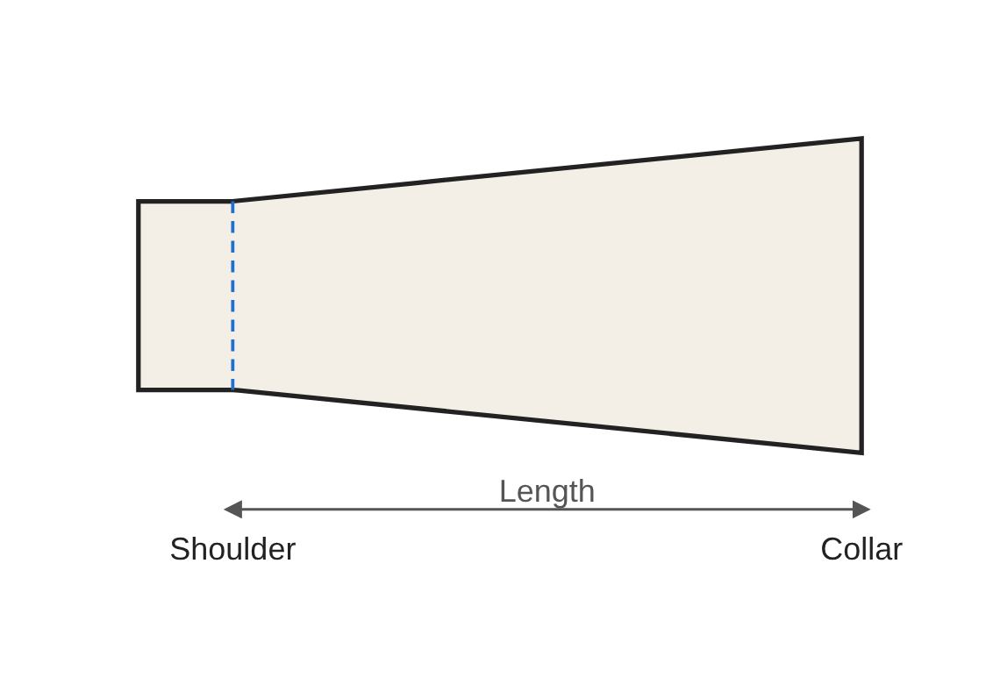
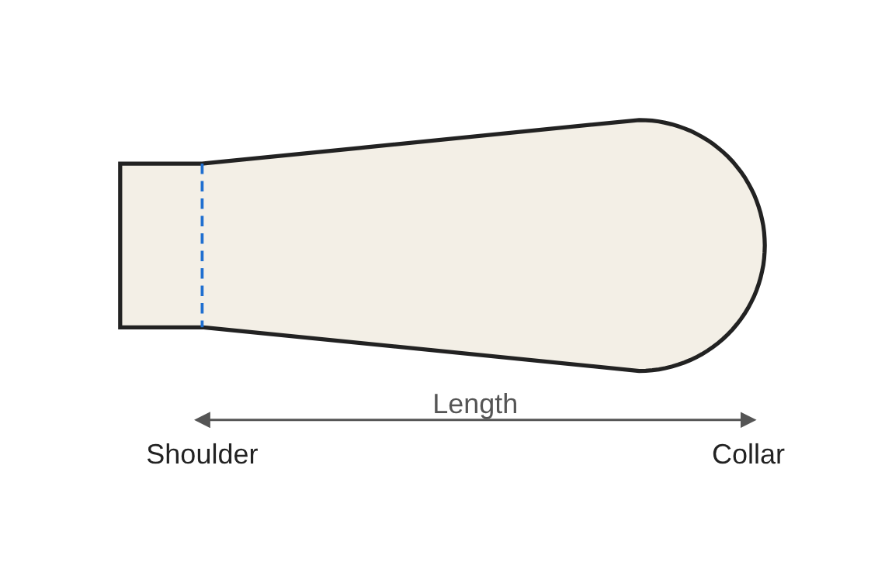
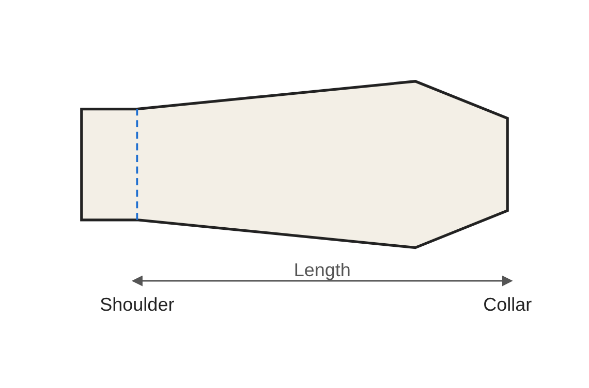
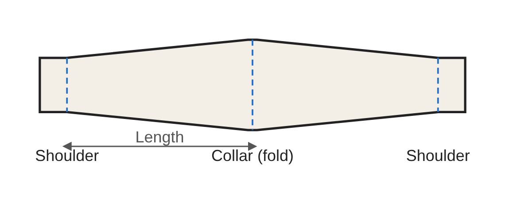

Options guide: epaulettes
Apart from military use, epaulettes have no practical purpose. They are there for style only and, as there is no accounting for taste, the range is wide: from the most classic to the most eccentric. Safari jackets (sahariennes), because of their military origin, suit epaulettes particularly well.
The basic measurements
An epaulette is a strip of fabric running from the shoulder to the collar. The shoulder side is meant to be sewn in when the bodice and the sleeves are joined; the other end, the collar side, stays free and is fastened as you choose. It is made of two pieces: cut 2 copies per epaulette (4 for a pair). Three measurements define it:
- Length: from the shoulder to the collar. Choose it according to your build and the look you want: measure the distance from the shoulder to the collar on your garment, then subtract the margin you want to leave on the collar side.
- Width at shoulder: width of the end sewn into the shoulder seam.
- Width at collar: width of the free end. If both widths are equal the epaulette is a rectangle; if the width at the collar is larger it widens towards the collar (a trapezoid).
The four shapes
These four shapes are simply among the most common ones. This guide makes no claim to be exhaustive: other shapes are possible, and suggestions are welcome through the “Your feedback” form.




Trapezoid. The collar end is straight. This is the simplest shape to make.
Rounded. The collar end is rounded. One option: the size of the rounding, as a proportion of the length. The larger the value, the earlier the rounding starts. The rounding extends slightly beyond the stated length.
Bevelled. The two corners on the collar side are cut at an angle, without the end necessarily being pointed. Two options: the length of the bevel along the edge (as a proportion of the epaulette length) and the shape of the end, from 1 (no bevel, straight end) to 0 (a sharp point). In between, the end is more or less wide.
Double (folded in two). Each piece has a shoulder side at both ends. Once the two pieces are joined (right sides together, then turned right side out), the finished epaulette is folded in two: the fold is on the collar side (blue dotted line in the middle of the pattern) and both ends are sewn together into the shoulder seam when the bodice and sleeves are joined. The part near the neck is often fixed by machine with a seam on the inner face before the sleeves are attached, which makes the seam “invisible”. This type of epaulette is stylistically interesting for the volume it gives to the piece.
Fastening
The pattern does not include a fastening: the type (button, snap fastener, hook-and-loop…) and its position are up to you, to be marked on your garment.
Seam allowance and fold-under allowance
The seam allowance can be adjusted in the tool (1 cm by default). The fold-under allowance (blue dotted lines on the pattern) can also be adjusted (1.5 cm by default): on the shoulder side it is used for the seam when joining the sleeves and the bodice; on the side it is used for turning the piece right side out.
Sewing tips
- Depending on the fabric and the style you choose, fusible interfacing may be needed on one or both sides.
- Press the fold-under with an iron before turning the piece right side out, to make the final shaping easier.
- Trim the corners well to make it easier to reshape them after turning.
- The thicker the fabric, the less sharp the angle should be, to make shaping easier.
- Topstitching the finished piece is a plus.